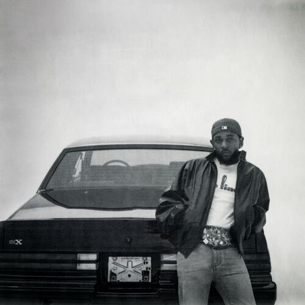

GNX

O GNX é basicamente Kendrick assumindo o papel de “antagonista necessário”.
Ele já fez o álbum consciente (TPAB), o comercial clássico (DAMN.), o terapêutico (Mr. Morale). Aqui ele faz o álbum de posição de poder. É um disco sobre:
Controle de narrativa, Guerra fria na indústria, Identidade da West Coast, Ego como ferramenta e Sobrevivência no topo
1. wacced out murals
Essa é quase um manifesto. O título mistura vandalismo e arte pública. “Murals” são murais permanentes — símbolo de legado. “Wacced out” sugere algo desrespeitado ou distorcido. Ele começa o álbum falando sobre:
Como a mídia pinta ele, Como a indústria tenta reduzir sua complexidade, A pressão de ser visto como “salvador do rap”, A produção é minimalista e tensa — espaço vazio, como se fosse uma sala ecoando pensamentos.
Ele já define o tom:
“Vocês podem tentar manchar minha imagem, mas meu legado já está na parede.”
2. squabble up
Aqui é Kendrick em modo batalha. “Squabble” significa briga pequena — mas o jeito que ele fala deixa claro que pra ele nada é pequeno. Tem flow acelerado, mudança de cadência, energia de confronto. É quase uma resposta subliminar a qualquer um que esteja questionando ele. Não é só diss, é postura. Essa faixa marca a transição:
Do introspectivo → para o confrontador.
3. luther (feat. SZA)
Essa é estratégica. Depois de duas faixas tensas, ele desacelera. O nome “Luther” remete a Luther Vandross, símbolo de amor soul clássico. Aqui ele trabalha:
Vulnerabilidade, Amor como redenção, Conexão emocional no meio do caos
SZA entra como equilíbrio — voz suave contrastando com o Kendrick agressivo do início. Tem uma ideia interessante aqui:
Mesmo no meio da guerra, ele ainda é humano.
4. man at the garden
Essa é muito simbólica. “Garden” pode remeter ao Jardim do Éden. Ele se coloca como alguém no centro de algo sagrado Tem um subtexto espiritual:
Ele foi escolhido? Ele conquistou? Ou ele caiu e voltou?
É uma música sobre posição e consciência de poder. Aqui o ego é apresentado como responsabilidade, não só arrogância.
hey now (feat. Dody6)
Essa é identidade pura. Mais crua, menos filosófica. É Kendrick voltando pra:
Compton, Cultura local e Sonoridade West Coast moderna
É importante porque ele mostra:
Mesmo no topo global, ele continua local.
6. reincarnated
Uma das mais profundas do álbum. Ele fala como se estivesse herdando almas, traumas e padrões do passado. É quase uma continuação espiritual de temas que ele já trabalhou em TPAB. A ideia central:
Ciclos se repetem, Trauma se transmite, Mas consciência quebra o ciclo.
É Kendrick olhando para a própria linhagem cultural.
7. tv off
Essa é crítica social. “Desliga a TV” é metáfora para:
Desligar distrações, Parar de consumir narrativa fabricada, Pensar por conta própria, É uma crítica à mídia, redes sociais, manipulação.
Ele basicamente diz:
Enquanto vocês assistem entretenimento, o jogo real acontece nos bastidores.
8. dodger blue (feat. Wallie the Sensei)
Essa é celebração de Los Angeles. “Dodger Blue” é referência ao time Dodgers. Tema:
Orgulho da cidade, Raiz cultural, Pertencimento
Depois de tantas faixas tensas, essa traz leveza e identidade. É quase um hino local.
9. peekaboo (feat. AzChike)
Energia provocativa. “Peekaboo” (esconde-esconde) sugere:
Eu vejo você, Você acha que está escondido, Mas eu estou atento
Tem subtexto competitivo forte. Aqui Kendrick assume postura dominante sem precisar citar nomes.
10. heart pt. 6
A série “The Heart” sempre marca transição de fase. Essa parte é reflexão:
Como ele mudou, Como ele enxerga rivalidade, O peso da fama, A responsabilidade artística.
É menos agressiva e mais estratégica. É ele falando com o público direto.
11. gnx
A faixa título fecha com símbolo máximo. O Buick GNX é um carro raro, potente, respeitado. Ele usa o carro como metáfora para:
Potência controlada, Raridade, Status, Velocidade
Não é só sobre ser forte. É sobre ser raro e impossível de ignorar.
O que ele estava tentando contar?
GNX parece ser Kendrick dizendo:
“Eu não sou o herói perfeito que vocês criaram.
Eu sou produto da guerra, da cidade, da fé e da estratégia.”
É um álbum de:
Autodefesa artística, Consolidação de legado, Domínio cultural
Ele não está pedindo aprovação. Ele está afirmando posição.